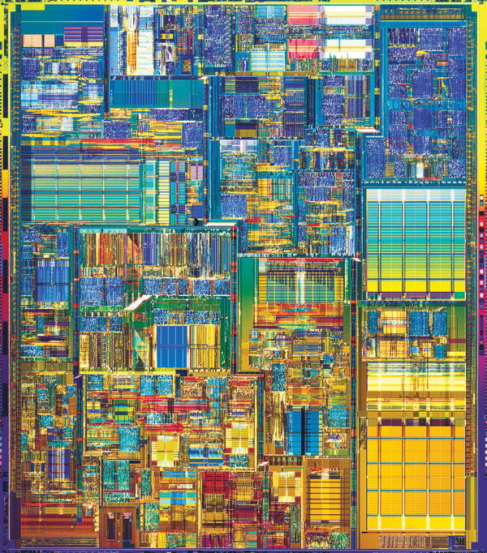

Andrew Demirjian builds linguistic, sonic and visual environments that disrupt habituated ways of reading, hearing and seeing. His interdisciplinary artistic practice examines structures that shape consciousness and perception, questioning frameworks that support the status quo and limit thought. The works are often presented in non-traditional spaces and take the form of multi-channel audiovisual installations, generative artworks, video poems, augmented reality apps, and live performances. He was recently awarded a Smithsonian Artist Research Fellowship with the Cooper Hewitt Museum , Andrew has also received two MacDowell Fellowships and three New Jersey State Council on the Arts Grants. Andrew’s work has been exhibited at The Museum of the Moving Image, The New Museum – First Look: New Art Online, Fridman Gallery, Eyebeam, The Arab American National Museum, the Ford Foundation Gallery, REDCAT, Transformer Gallery, the Center for Book Arts, Locust Projects, The Newark Museum and many other galleries, festivals and museums. His work has been supported by the MIT Open Documentary Lab, Nokia Bell Labs, Puffin Foundation, Artslink, Harvestworks, Rhizozme, Diapason, The Experimental Television Center, LMCC, and The Bemis Center. Andrew teaches theory and production courses in emerging media in the Film and Media Department and the Integrated Media Arts MFA program at Hunter College.
click here to go to page two.